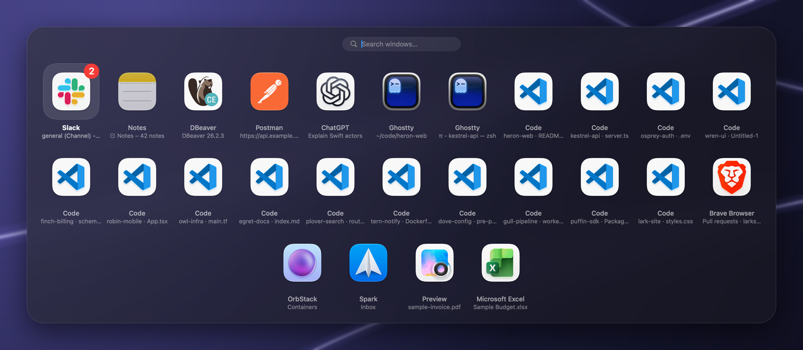
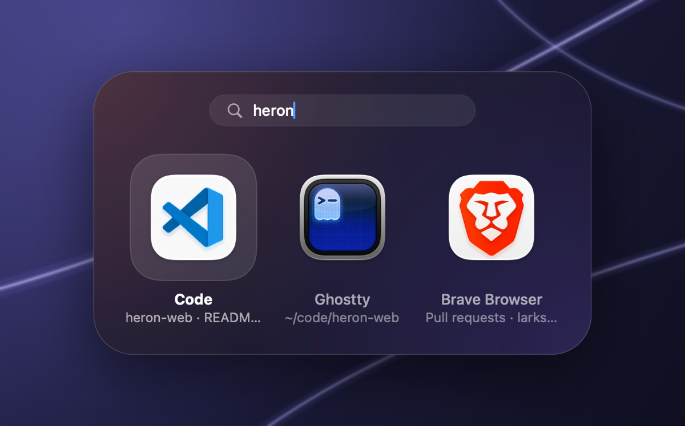
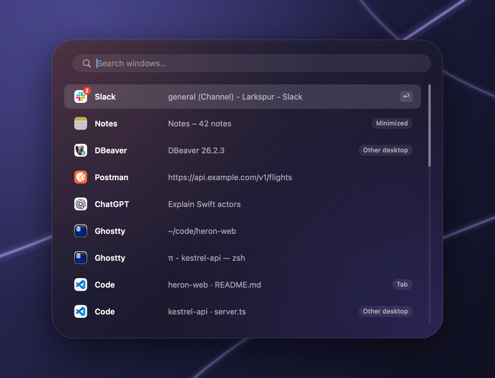
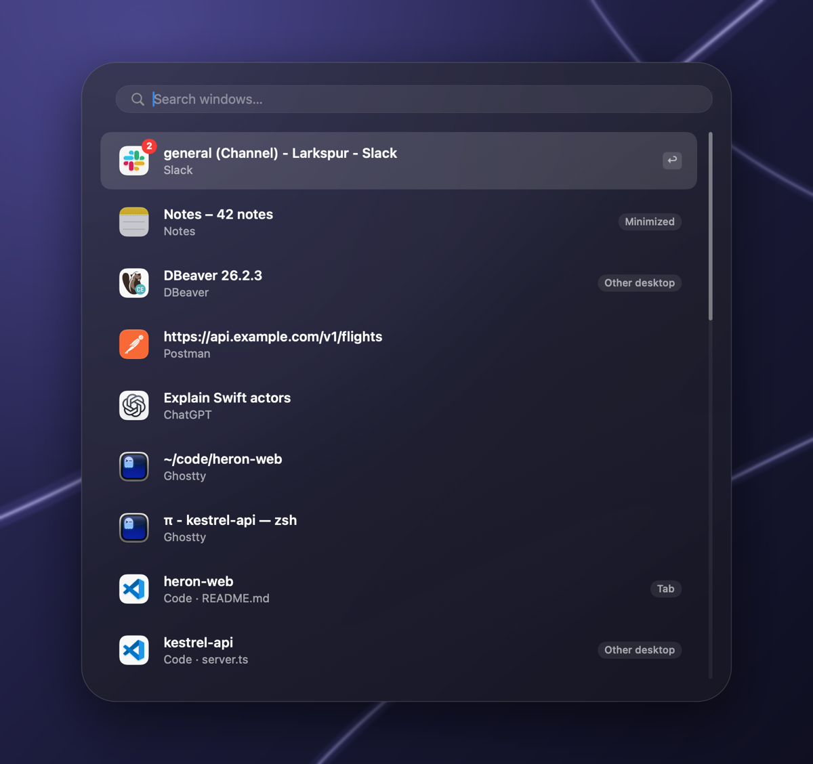

Every window, one keystroke.
The look of Swoop in both themes: tokens, components and rules. Use the toggles above to switch every themed example between Swoop and Classic, in Dark and Light. Text reference: DESIGN.md.
⚡ Speed over decoration
Instant, typeable on the first keystroke. Motion is short and never blocks input.
🍎 Native first
Real app icons, AppKit materials, SF Pro and SF Symbols, standard Settings controls.
🔅 Restraint
Dim by default, bright when selected. One accent at a time.
🧊 Frosted floating UI
Everything that floats over other apps is see-through: blur, optionally tinted.
📏 One design line
A theme applies to every surface with the same tokens. Never tune one surface alone.
⌨️ Keyboard primary
Selection never depends on hover. The mouse still works everywhere.
🔒 Honest copy
Say what Swoop does and doesn't do. No tracking, no network without consent.
Swoop and Classic
Same content, different surface. Classic is the bare system blur, clearly see-through.
Swoop lays the brand gradient over the same blur at Brand.frostTint = 55 %, less
see-through on purpose: the tint is the theme. Swoop is the default.
| Surface | Swoop (default) | Classic |
|---|---|---|
| Switcher | Blur + brand gradient @ 55 % | Blur only |
| Settings | Brand background under a clear toolbar; orange switches and picker selection | Standard macOS window |
| About | Custom frosted brand window | Standard About panel, frosted |
| Check for Updates | Custom frosted window that follows the check live | Standard alert |
| Support card | Brand surface, follows Light/Dark, orange coffee button | Always dark HUD, yellow coffee button |
| Onboarding | Always brand: the first impression | |
| Switcher content | Identical: icons, highlight, search field, text tones | |
Brand tokens
Defined once in Swoop/UI/Theme/SwoopTheme.swift (enum Brand). Never use literals in views.
Brand background, layer by layer (follows the appearance toggle)
| Layer | Dark | Light |
|---|---|---|
| Base wash | #211A36 → #141226 | #FFF5ED → #F2E8FA |
| Orange glow (r 520 × scale) | orange @ 30 % | orange @ 28 % |
| Violet glow (r 560 × scale) | violet @ 40 % | violet @ 22 % |
| Scale | FittedBrandBackground: max(w, h) / 800. Fixed: About/update 0.5, support card 0.65, picker 0.17. | |
Text tones in the switcher (explicit, not vibrancy)
Semantic
SF Pro, one family
System font everywhere; SF Pro Rounded only for keycaps and the shortcut recorder. Settings uses system text styles.
Continuous corners
Squircles (style: .continuous) and capsules. Radii by element:
Grid and lists
Metrics from SearchViewModel.metrics and ListMetrics. Panels stay under 90 % of the screen; columns are whole cells, nothing is clipped.
Grid cell (Large icon, 96 pt)
Icon sizes: Small 64 · Medium 80 · Large 96
| Column / row spacing | max(4, icon×0.1) / max(10, icon×0.2) |
| Horizontal padding | 28 |
| Top (with search) / bottom | 75 (30 hidden) / 26 |
| Search pill | 242 × 29, centered |
| Min panel width · rows | 400 · 1–8 visible |
Lists
Same selection and scrolling model as the grid (one column).
| Compact | Comfortable | |
|---|---|---|
| Panel width | 640 | 680 |
| Row height | 40 | 60 |
| Icon | 26 | 38 |
| Row inset | 14 | 16 |
| Row gap · list inset | 4 · 20 | |
| Top (with search) / bottom | 73 (30 hidden) / 24 | |
| Scroll bar | custom 4 pt, 12 pt gap | |
| Visible rows | 3–20 | |
In lists, the search pill spans from where the app icons start to where the scroll bar ends.
Quick, then calm
Short ease-outs. Reduce Motion is always honored (no open fade, fade-only step changes).
Switcher open
Fade 0 → 1 in 0.24 s, cubic-bezier(0.2, 0.8, 0.3, 1). Close is immediate.
Timings
| Support card in | fade 0.25 s |
| Onboarding step | spring 0.42 / 0.88, slide 44 + fade |
| Step dots | spring 0.35 / 0.8, dot 6 → 18 |
| Pickers, cards, status | ease-out 0.15–0.25 s |
| Button press | opacity 0.82, scale 0.98, 0.12 s |
| Symbol swaps | symbolEffect .replace |
Elevation
System window shadow on floating panels. Orange glow under prominent buttons and behind the brand icon (never a shadow on the icon itself).
Building blocks
Themed examples follow the toggles. Source files in Swoop/UI/.
Switcher layouts
Selected: fill + 1 pt stroke + bold name. Badge top-trailing. Minimized icons at 75 % with a state symbol.
Capsule, 34 pt (30 in small windows). Keeps its color when the window isn't key. Pair with .focusEffectDisabled().
One field for every layout. Hidden (zero height) until you type, unless "Always show the search field".
Real key glyphs. Current step dot widens to 18 pt in orange.
64 pt, radius 16, color @ 14 %. Decorative: hidden from VoiceOver.
Onboarding blocks
The real thing
Screenshots from docs/images/.




Do and don't
Do
- Use
Brand.*tokens and the shared backgrounds (FrostedBrandBackground,FittedBrandBackground). - Use
Brand.frostTintfor every frosted Swoop surface; change it in one place. - Give every floating surface a Swoop and a Classic treatment, in light and dark.
- Continuous corners, capsules, SF Symbols, real app icons.
- Check translucency over a varied backdrop with a region capture (
screencapture -R).
Don't
- Hard-code a tint or brand color in a view.
- Make a floating surface opaque, or tint one surface differently.
- Change switcher content (icons, rows, tones) per theme.
- Use the system accent in Swoop-themed controls, or orange in Classic.
- Bundle app icons, add custom fonts, or rely on hover for selection.
New surface checklist
- Floating → frosted in both themes; Swoop adds
FrostedBrandBackground. - Window non-opaque with a clear background, opened with
BringToFront.show. - Light and dark checked in both themes.
- Tokens only; new shared values go in
SwoopTheme.swiftand DESIGN.md. - Localizable strings, VoiceOver labels, Reduce Motion.
- Classic vs Swoop screenshot comparison before merging.